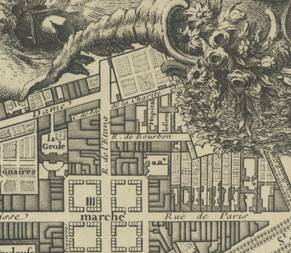
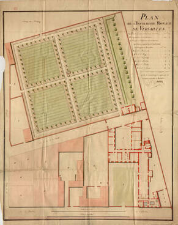
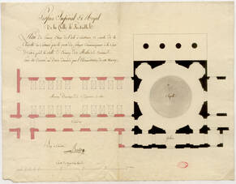

Annexe 2 hopital RICHAUD.

Épisode 1 - Des origines à l'hôpital royal

Épisode 2 - Agrandissements et reconstruction au XVIIIe siècle

Épisode 3 - L’achèvement des travaux de construction (XIXe siècle)
Épisode 4 - Aménagements et déménagement (XXe siècle)
Épisode 5 - Patients et personnel hospitalier au fil des siècles